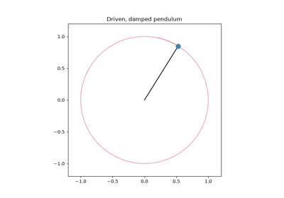
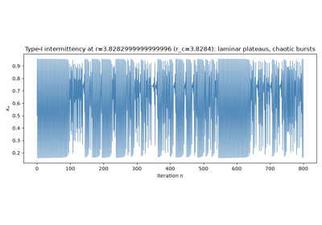
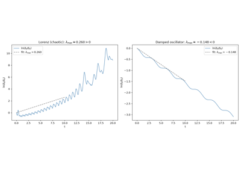
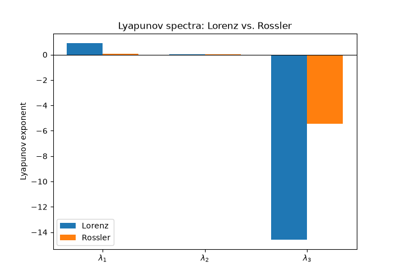
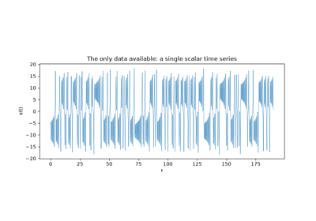
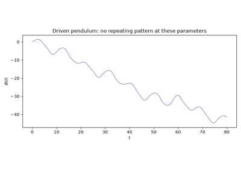
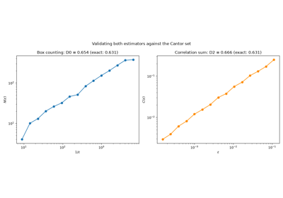
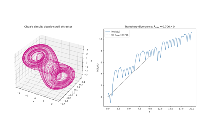

Breakthroughs in Chaos Theory and Dynamical Systems#
“One meteorologist remarked that if the theory were correct, one flap of a sea gull’s wings would be enough to alter the course of the weather forever.” – Edward N. Lorenz, Deterministic Nonperiodic Flow, 1963
Chaos theory is the study of deterministic systems whose long-term
behavior is, in practice, unpredictable: simple, exactly-specified rules
that nonetheless generate motion too sensitive to initial conditions, too
intricately structured, or too effectively random to forecast far into the
future. The systems, maps, billiards, and diagnostics collected in
physicskit.chaos retrace the century-long path from Poincare’s
first glimpse of this phenomenon in celestial mechanics to the modern
toolkit – Lyapunov exponents, fractal dimensions, Poincare sections – used
to quantify it, and on into its quantum-mechanical counterpart. This
chronology traces the major conceptual breakthroughs behind the package,
with a pointer to the corresponding implementation in this package at
each stop.
1890 – Poincare and the Three-Body Problem#
While competing for King Oscar II of Sweden’s prize on the stability of the solar system, Henri Poincare discovered that even the restricted three-body problem – a massless particle moving under the gravity of two massive bodies in circular orbit about each other – has no general closed-form solution, and that its trajectories can depend on initial conditions with essentially unpredictable sensitivity. This was the first documented discovery of what is now called deterministic chaos, decades before the term existed, and it emerged not from a toy model but from the oldest problem in mathematical physics: predicting the motion of the planets.
Implementation: physicskit.chaos.systems.continuous.RestrictedThreeBody
integrates exactly this planar circular restricted three-body problem in
the co-rotating frame, and
jacobi_constant()
computes its conserved rotating-frame energy analog, useful for telling a
regular orbit (like the classic Arenstorf orbit used as the default
initial condition) from a chaotic one nearby.
lagrange_points() locates the
system’s five equilibrium points – L1 through L5, the same points later
named for Lagrange’s own exact solutions of the general three-body
problem – by root-finding directly on the rotating-frame equations of
motion, and
physicskit.chaos.visualizers.dynamic_plots.animate_restricted_three_body()
animates a trajectory alongside both primaries and all five labeled
Lagrange points, making it directly visible how closely (or not) a given
orbit weaves past each fixed point of the rotating frame.
References: H. Poincare, “Sur le probleme des trois corps et les equations de la dynamique,” Acta Mathematica 13, 1-270 (1890) – the corrected prize memoir, supplemented by Les methodes nouvelles de la mecanique celeste (Gauthier-Villars, 1892-1899).

Restricted Three-Body Problem: Poincare’s Original Chaos
1954 – 1963 – The KAM Theorem#
Andrey Kolmogorov announced, at the 1954 International Congress of Mathematicians, that most of the invariant tori of an integrable Hamiltonian system survive a small perturbation rather than being immediately destroyed – contradicting the older intuition that chaos should appear as soon as any nonlinearity is switched on. Vladimir Arnold (1963) and Jurgen Moser (1962) supplied the rigorous proofs, for the Hamiltonian and area-preserving-map settings respectively, that now bear all three names as the Kolmogorov-Arnold-Moser (KAM) theorem. KAM tori that survive act as impenetrable barriers in phase space; as the perturbation strengthens, tori break up outside-in (by irrationality of their winding number, per the later Greene/MacKay theory), opening more and more of the phase space to chaotic wandering.
Implementation: the fully integrable billiards –
physicskit.chaos.systems.billiards.CircleBilliard,
RectangleBilliard, and
EllipseBilliard (whose
Poincare section is exactly foliated by smooth invariant curves tangent to
a confocal caustic; see
foci()) –
illustrate the unperturbed side of KAM, while
TruncatedCircleBilliard
gives a genuinely mixed phase space where surviving KAM curves coexist
with a chaotic sea, both visualized with
physicskit.chaos.visualizers.phase_space.plot_poincare_section().
References: A. N. Kolmogorov, Dokl. Akad. Nauk SSSR 98, 527-530 (1954); V. I. Arnold, Russian Math. Surveys 18(5), 9-36, and 18(6), 85-191 (1963); J. Moser, Nachr. Akad. Wiss. Gottingen Math.-Phys. Kl. II, 1-20 (1962).

1963 – Lorenz and the Butterfly Effect#
Meteorologist Edward Lorenz, simplifying a model of atmospheric convection down to three coupled nonlinear ordinary differential equations, discovered by accident (rounding a restarted numerical integration to fewer digits) that two trajectories starting imperceptibly apart diverge completely within a finite time – while both remain confined to a bounded, intricately folded, non-repeating shape that came to be called a strange attractor. Lorenz’s 1963 paper, Deterministic Nonperiodic Flow, is the founding document of chaos theory as a quantitative science, and his metaphor for sensitive dependence (a seagull’s, later a butterfly’s, wingflap) gave the field its popular name.
Implementation: physicskit.chaos.systems.continuous.Lorenz
integrates exactly this system, with the classic
\((\sigma, \rho, \beta) = (10, 28, 8/3)\) parameters as its defaults;
plot_poincare_map() slices the
attractor at the plane \(z = \rho - 1\), the classic surface-of-section
through the two unstable fixed points its two lobes wind around.
References: E. N. Lorenz, “Deterministic Nonperiodic Flow,” J. Atmos. Sci. 20(2), 130-141 (1963).
1965 – Smale’s Horseshoe Map#
Stephen Smale, looking for the simplest possible topological mechanism behind the persistent, structurally stable chaos that Cartwright, Littlewood, and Levinson had found in forced-oscillator equations during the 1940s, distilled it down to a single geometric operation: take a square, stretch it into a long thin strip, fold that strip in half, and lay it back down across the original square so it intersects the square in two disjoint bands. Points that never escape this stretch-fold-return operation under repeated iteration, forward and backward, form an invariant Cantor set on which the map is exactly conjugate to the full shift on two symbols – meaning every possible bi-infinite sequence of “left band, right band” choices is realized by exactly one orbit. This gave chaos its first rigorous, coordinate-free signature (a horseshoe implies an invariant set with positive topological entropy and dense periodic orbits) and its first bridge to symbolic dynamics, independent of any specific equation.
Implementation: physicskit.chaos.systems.maps.BakersMap is the
horseshoe’s most direct concrete realization: it cuts the unit square,
stretches each piece back to full width, and stacks them – literally
Smale’s stretch, cut, and stack – and, because each branch is exactly
affine, its
lyapunov_exponents() gives
the horseshoe’s expansion rate in closed form as the entropy of the
underlying two-symbol Bernoulli process, with no numerical estimation
needed.
References: S. Smale, “Diffeomorphisms with Many Periodic Points,” in Differential and Combinatorial Topology (S. S. Cairns, ed.), Princeton Univ. Press (1965), pp. 63-80; survey Bull. Amer. Math. Soc. 73, 747-817 (1967).

1970 – 1974 – Sinai, Bunimovich, and the Chaotic Billiard#
Building on George Birkhoff’s 1927 study of billiards in convex regions (which introduced the boundary-arclength and reflection-angle coordinates still used to reduce a billiard’s flow to a discrete boundary map) and on the Boltzmann-Sinai ergodic hypothesis for hard-sphere gases, Yakov Sinai proved in 1970 that a square table with a convex scatterer removed from its center – now called the Sinai billiard – is not merely chaotic but fully ergodic and mixing, the first rigorous proof of ergodicity for a physically motivated Hamiltonian system. Leonid Bunimovich then showed (1974) that convexity of the scatterer is not even required: his stadium billiard, bounded entirely by straight edges and outward-curving semicircles, is chaotic through a purely geometric defocusing mechanism, proving that chaos does not require negative curvature anywhere on the boundary.
Implementation: physicskit.chaos.systems.billiards.SinaiBilliard
and BunimovichStadium
implement exactly these two shapes;
physicskit.chaos.core.base_system.BilliardSystem.simulate() returns
each bounce’s Birkhoff coordinates (s, sin_phi) directly, in the
spirit of Birkhoff’s original reduction.
References: Ya. G. Sinai, Russian Math. Surveys 25(2), 137-189 (1970); L. A. Bunimovich, Funct. Anal. Appl. 8(3), 254-255 (1974, announcement), full proof in Commun. Math. Phys. 65(3), 295-312 (1979); G. D. Birkhoff, Dynamical Systems, AMS Colloq. Publ. 9 (1927).

1971 – Ruelle, Takens, and the Route to Turbulence#
The prevailing Landau-Hopf picture of turbulence held that a fluid becomes turbulent gradually, by accumulating an ever-growing number of independent oscillation frequencies as more instabilities switch on, each adding another dimension to a quasi-periodic torus in phase space. David Ruelle and Floris Takens argued in their 1971 paper “On the Nature of Turbulence” that this picture is wrong on mathematical grounds: a torus of four or more incommensurate frequencies is not generically stable, and arbitrarily small perturbations should instead collapse it onto a strange, non-periodic attractor after only two or three bifurcations. In naming and formalizing this “strange attractor” – a set with fractal, sensitive-dependence structure sitting inside a low-dimensional flow – they gave Lorenz’s 1963 discovery its general theoretical home and predicted that genuine turbulence should already be visible in remarkably simple, low-dimensional systems. Otto Rossler took this prediction at face value in 1976, deliberately engineering the simplest possible continuous flow – a single, gentle stretch-and-fold band rather than Lorenz’s double-lobed butterfly – to demonstrate exactly the strange attractor Ruelle and Takens had predicted must exist.
Implementation: physicskit.chaos.systems.continuous.Rossler
integrates exactly this system, with the classic
\((a, b, c) = (0.2, 0.2, 5.7)\) parameters as its defaults, producing
the single-band strange attractor built to confirm the Ruelle-Takens
scenario; plot_poincare_map()
sections it at \(y = 0\), collapsing the ribbon-like attractor onto the
near-one-dimensional folded curve that makes its single stretch-and-fold
mechanism directly visible.
References: D. Ruelle and F. Takens, Commun. Math. Phys. 20(3), 167-192 (1971), erratum Commun. Math. Phys. 23, 343-344 (1971); O. Rossler, Phys. Lett. A 57(5), 397-398 (1976).
1975 – 1978 – Feigenbaum Universality#
Studying the period-doubling cascade of the logistic map as it is tuned toward chaos, Mitchell Feigenbaum discovered in 1975 that the parameter values at which each successive period doubles converge geometrically, with a ratio
that is universal: the same constant governs the period-doubling route to chaos in essentially any one-dimensional map with a single quadratic maximum, and in a wide class of real physical experiments (convecting fluids, driven electronic circuits) far removed from the map itself. This was one of the first demonstrations that chaotic systems obey their own precise, quantitative, and broadly universal laws.
Implementation: physicskit.chaos.systems.maps.LogisticMap
implements exactly this map, x' = r*x*(1-x), whose docstring notes the
period-doubling accumulation at the Feigenbaum constant; sweep it with
physicskit.chaos.visualizers.bifurcation.plot_bifurcation_diagram()
and map_bifurcation_sampler()
to see the cascade directly.
References: M. J. Feigenbaum, J. Stat. Phys. 19(1), 25-52 (1978), and 21(6), 669-706 (1979).

1980 – Pomeau-Manneville Intermittency#
Period-doubling and the quasi-periodic Ruelle-Takens route are not the only ways a dissipative system can slide into chaos. Yves Pomeau and Paul Manneville identified a third, qualitatively distinct mechanism in 1980: near a tangent (saddle-node) bifurcation, a trajectory spends increasingly long, apparently regular “laminar” stretches close to the fixed point that is about to vanish, each one abruptly interrupted by a short, chaotic “burst” that reinjects the trajectory back into the laminar region before the cycle repeats. Unlike period-doubling, which resolves into a clean hierarchy of periodic windows before chaos fully takes hold, intermittency alternates unpredictably between long nearly-periodic episodes and brief chaotic ones arbitrarily close to the transition, with the mean laminar length diverging as a power law in the distance from the tangency. Because the mechanism requires only a generic tangent bifurcation in a one-dimensional return map, it turns up – alongside period-doubling and quasi-periodicity – as one of the three canonical routes to chaos found repeatedly in fluid, chemical, and electronic experiments.
Connection: physicskit.chaos has no dedicated laminar-length or
intermittency diagnostic, but the same tangent-bifurcation mechanism is
directly visible in physicskit.chaos.systems.maps.LogisticMap:
the period-three window discussed below (its left edge sits at exactly
r ~= 3.8284) is born at a tangent bifurcation, and iterating the map at
values of r approaching that threshold from below, using
physicskit.chaos.visualizers.bifurcation.map_bifurcation_sampler()
to generate the raw trajectory rather than the swept diagram, shows exactly
the long laminar episodes punctuated by short chaotic bursts that define
type-I intermittency.
References: Y. Pomeau and P. Manneville, “Intermittent Transition to Turbulence in Dissipative Dynamical Systems,” Commun. Math. Phys. 74, 189-197 (1980).

Pomeau-Manneville intermittency: laminar phases and chaotic bursts
1976 – The Henon Map and Strange Attractors#
Michel Henon, seeking a simpler two-dimensional map that would reproduce the essential stretch-and-fold mechanism behind Lorenz’s three-dimensional strange attractor without the cost of integrating a differential equation, introduced the map \(x' = 1 - ax^2 + y,\ y' = bx\). At his classic parameters, \(a=1.4,\ b=0.3\), iterating the map produces a strange attractor with the same qualitative fractal, self-similar cross-section as a Poincare section of the Lorenz flow – proof that the Lorenz attractor’s essential geometry could be captured in a model simple enough to analyze rigorously.
Implementation: physicskit.chaos.systems.maps.HenonMap uses
exactly these classic parameters as its defaults;
plot_bifurcation_diagram()
(via map_bifurcation_sampler())
sweeps a to show the period-doubling cascade the map passes through on
its way to that classic attractor.
References: M. Henon, Commun. Math. Phys. 50(1), 69-77 (1976).
1979 – The Chirikov-Taylor Standard Map#
Boris Chirikov introduced the standard map – a periodically kicked rotor reduced to a single area-preserving map on the \((\theta, p)\) cylinder – and, in his landmark 1979 review A Universal Instability of Many-Dimensional Oscillator Systems, used it to formulate the resonance-overlap criterion: chaos becomes essentially global once neighboring nonlinear resonances in phase space grow wide enough to overlap. Because nearly any kicked or periodically driven nonlinear oscillator reduces locally to this same map, it became the single most-studied model system in all of nonlinear dynamics, the standard testbed for both classical KAM breakup and (via its exact quantization) quantum chaos.
Implementation: physicskit.chaos.systems.maps.StandardMap
implements exactly this map; its docstring records Chirikov’s own
regimes – integrable at k=0, chaos onset around k~1, global
(resonance-overlap) chaos for k >~ 4-5 – and sweeping k through
map_lyapunov_spectrum() turns that
qualitative picture into a directly measured largest Lyapunov exponent.
References: B. V. Chirikov, Phys. Rep. 52(5), 263-379 (1979).

1979 – 1982 – The Quantum Kicked Rotor and Dynamical Localization#
Chirikov’s classical standard map heats without bound once the kick strength crosses the resonance-overlap threshold: a particle’s momentum random-walks diffusively through the chaotic sea, its kinetic energy growing linearly in time with no equilibrium in sight (the map-based cousin of Arnold diffusion in higher-dimensional Hamiltonian systems). Giulio Casati, Boris Chirikov, Felix Izrailev, and Joseph Ford asked, in 1979, what becomes of this classical heating once the rotor is quantized, and found numerically that it does not persist: the quantum kicked rotor’s momentum distribution tracks the classical diffusion only briefly before saturating, its tails decaying exponentially rather than continuing to spread. Shmuel Fishman, Dov Grempel, and Rafael Prange explained why in 1982 by mapping the quantized kicked rotor’s Floquet eigenproblem onto an effective one-dimensional tight-binding (Anderson) model: the quasi-energy eigenstates themselves turn out to be exponentially localized in momentum, in direct analogy with Anderson localization of electrons in a disordered lattice – except here the effective “disorder” comes not from any real spatial randomness but from the quasi-periodic structure of the map’s own kinetic phase. This “dynamical localization” is a purely quantum interference effect with no classical counterpart, and one of the sharpest demonstrations that quantizing a classically chaotic system does not simply reproduce its chaos: destructive interference between paths that revisit the same momentum after different numbers of kicks arrests the classical random walk outright.
Implementation: physicskit.chaos.quantum.maps.QuantumKickedRotor
builds exactly the Floquet operator this analysis quantizes – alternating
a kick phase and a free-rotation phase joined by the discrete Fourier
transform, in exact correspondence with
physicskit.chaos.systems.maps.StandardMap – and
evolve() propagates
a wavepacket through it kick by kick; its
husimi()
distribution (built on
physicskit.chaos.quantum.husimi.husimi_function()) directly
visualizes how the packet’s spread saturates well short of filling the
chaotic sea that the classical StandardMap
explores freely at the same kick strength.
References: G. Casati, B. V. Chirikov, F. M. Izrailev, and J. Ford, in Stochastic Behavior in Classical and Quantum Hamiltonian Systems, Lecture Notes in Physics 93, Springer, 334-352 (1979); S. Fishman, D. R. Grempel, and R. E. Prange, Phys. Rev. Lett. 49, 509-512 (1982).
1980 – 1985 – Benettin’s Method for Lyapunov Exponents#
Giancarlo Benettin and collaborators (1980) turned the Lyapunov exponent – Aleksandr Lyapunov’s 1892 measure of how fast nearby trajectories of a dynamical system diverge – into a practical numerical algorithm: evolve a small orthonormal frame of tangent vectors alongside the trajectory under the linearized dynamics, periodically re-orthonormalizing it with a QR decomposition to prevent every vector from collapsing onto the single fastest-growing direction, and accumulate the logarithmic growth rate of each axis. Alan Wolf and collaborators (1985) popularized a closely related direct estimator for experimental time series. Because a positive largest Lyapunov exponent is by far the most widely used operational definition of chaos, this pair of methods turned “is this system chaotic?” from a qualitative judgment into a number.
Implementation: physicskit.chaos.utils.metrics.benettin_lyapunov_spectrum()
and map_lyapunov_spectrum() implement
exactly the Benettin QR method, for flows and maps respectively;
lyapunov_exponent_from_divergence()
implements the direct-divergence estimator. The generalized baker’s map’s
lyapunov_exponents() gives
the rare case of an exact, closed-form answer, used to validate all three
numerically.
References: G. Benettin et al., Meccanica 15, 9-20 and 21-30 (1980); A. Wolf et al., Physica D 16(3), 285-317 (1985); foundational: A. M. Lyapunov, doctoral thesis (1892).

Lyapunov Divergence: Chaotic vs. Non-Chaotic

Full Lyapunov Spectrum (Benettin QR Method)
1981 – 1993 – Takens’ Embedding Theorem and Experimental Chaos#
Every tool above assumes a known equation of motion to integrate. Real experimental data – a single scalar voltage trace, a fluid probe’s velocity record – offers no such thing, only a sequence of numbers sampled from some unknown dynamical system. Floris Takens showed, in his 1981 paper “Detecting Strange Attractors in Turbulence,” that this is enough: for generic systems and a generic observable, stacking delayed copies of a single scalar time series, \(\mathbf{y}(t) = \big(x(t),\,x(t-\tau),\,x(t-2\tau),\,\ldots,\,x(t-(d-1)\tau)\big)\), into a sufficiently high-dimensional space reconstructs an attractor that is diffeomorphic to the true (unobserved) one – the reconstructed and true attractors share every dynamical invariant, from Lyapunov exponents to fractal dimension, even though only one scalar channel was ever measured. Two further methodological breakthroughs made the theorem practically usable on noisy, finite data: Michael Rosenstein and collaborators’ 1993 algorithm extracts the largest Lyapunov exponent directly from a delay-embedded time series by tracking how nearby reconstructed trajectories diverge, with no equations of motion required at any step; and James Theiler and collaborators’ 1992 method of surrogate data – randomizing a series’ phases while preserving its power spectrum and amplitude distribution – gives a rigorous statistical null hypothesis against which a measured “chaotic” signature can be tested, so a positive Lyapunov exponent or a fractal dimension is not mistaken for an artifact of linear, filtered noise. Together, embedding, exponent estimation, and surrogate testing turned chaos from a property of equations into something directly measurable in a laboratory time series.
Implementation: physicskit.chaos.utils.timeseries.delay_embed()
implements exactly Takens’ delay-coordinate reconstruction;
rosenstein_lyapunov() (built on
average_log_divergence())
implements the Rosenstein algorithm directly on top of it, and
surrogate_test(), backed by
iaaft_surrogate()’s
iterative-amplitude-adjusted-Fourier-transform surrogates, reproduces
Theiler et al.’s significance test – all three applicable to a bare
scalar time series with no known equations of motion at all, unlike every
other Lyapunov or dimension estimator in this package.
References: F. Takens, Lecture Notes in Mathematics 898, Springer, 366-381 (1981); M. T. Rosenstein et al., Physica D 65, 117-134 (1993); J. Theiler et al., Physica D 58, 77-94 (1992).

Analyzing a Raw Time Series (No Equations Required)
1982 – D’Humieres, Beasley, Huberman, and Libchaber’s Forced Pendulum#
Feigenbaum’s universality was discovered in an abstract one-dimensional map; the natural next question was whether the same period-doubling route to chaos would survive intact in an actual mechanical system, with inertia, viscous damping, and continuous-time dynamics rather than a single discrete iteration. Dominique D’Humieres, Malcolm Beasley, Bernardo Huberman, and Albert Libchaber answered it in their 1982 paper “Chaotic States and Routes to Chaos in the Forced Pendulum” (Physical Review A 26, 3483): studying the sinusoidally driven, damped pendulum – realized experimentally as a phase-locked-loop electronic circuit obeying exactly the same equation of motion – they mapped out, as the forcing amplitude is swept, the same cascade of period-doubling bifurcations into chaos, interspersed with windows of periodic behavior, that the logistic map had already shown in the abstract. It was one of the clearest early demonstrations that Feigenbaum’s route to chaos is not a peculiarity of one-dimensional maps but a generic feature of forced nonlinear oscillators, mechanical or electronic alike.
Implementation: physicskit.chaos.systems.continuous.DrivenPendulum
integrates exactly this equation; sampling its
rhs() once per
forcing period with
physicskit.chaos.visualizers.bifurcation.stroboscopic_bifurcation_sampler()
and sweeping the forcing amplitude with
plot_bifurcation_diagram()
reproduces the same period-doubling cascade as
physicskit.chaos.systems.maps.LogisticMap, this time in a genuine
forced mechanical oscillator rather than an abstract map;
physicskit.chaos.visualizers.dynamic_plots.animate_driven_pendulum()
animates the pendulum swinging under damping and periodic forcing
directly.

Driven Pendulum: the Period-Doubling Route to Chaos
1983 – Mandelbrot and the Correlation Dimension#
Benoit Mandelbrot’s The Fractal Geometry of Nature (1982) popularized the idea that strange attractors, like coastlines and mountain ranges, have a well-defined but generally non-integer dimension, quantifying how densely a self-similar set fills the space it lives in. The following year, Peter Grassberger and Itamar Procaccia gave the first practical algorithm for measuring this dimension directly from a finite set of trajectory points – the correlation dimension – by counting how the fraction of point pairs closer together than \(\varepsilon\) scales as \(\varepsilon \to 0\), converging far faster with limited data than the older box-counting approach.
Implementation: physicskit.chaos.utils.dimension.box_counting_dimension()
implements the classical box-counting (capacity) dimension;
correlation_dimension() implements
the Grassberger-Procaccia algorithm directly.
References: B. B. Mandelbrot, The Fractal Geometry of Nature (Freeman, 1982); P. Grassberger and I. Procaccia, Physica D 9, 189-208 (1983), and Phys. Rev. Lett. 50, 346-349 (1983).

Fractal Dimension: Box-Counting and Correlation Dimension
1983 – 1985 – Chua’s Circuit: Chaos Confirmed in Hardware#
Leon Chua designed, in 1983, the simplest possible electronic circuit – two capacitors, one inductor, one resistor, and a single piecewise-linear nonlinear resistor (the “Chua diode”) – explicitly to prove that chaos was not a numerical artifact of digital simulation but a genuine physical phenomenon. That original 1983 design was never itself written up as a stand-alone paper: Tomasz Matsumoto published the first simulation in 1984, and Gui-Qing Zhong and Franco Ayrom built and measured real hardware in 1985, observing exactly the predicted double-scroll attractor – two spiral lobes with the trajectory switching unpredictably between them – before Chua, Motomasa Komuro, and Matsumoto gave the complete mathematical formalization in 1986, including a rigorous proof via the Shil’nikov criterion that the circuit’s equations really do generate chaos. It remains the canonical example of experimentally verified chaos in a physical system simple enough to build on a breadboard.
Implementation: physicskit.chaos.systems.continuous.Chua
integrates exactly this circuit’s equations, including the piecewise-linear
diode characteristic, and reproduces the double-scroll attractor at the
classic parameters; plot_lyapunov_divergence()
confirms the attractor is genuinely chaotic by tracking the exponential
separation of two initially nearby trajectories.
References: T. Matsumoto, IEEE Trans. Circuits Syst. CAS-31(12), 1055-1058 (1984); G.-Q. Zhong and F. Ayrom, Int. J. Circuit Theory Appl. 13(1), 93-98 (1985); full formalization L. O. Chua, M. Komuro, and T. Matsumoto, IEEE Trans. Circuits Syst. CAS-33(11), 1072-1118 (1986).

Chua’s Circuit: the Double-Scroll Attractor
1984 – Quantum Chaos: Scars and the BGS Conjecture#
Quantizing a classically chaotic system raises an immediate puzzle: the linear Schrodinger equation has none of the exponential sensitivity that defines classical chaos, so where does the classical chaos go? Eric Heller found part of the answer in 1984: some quantum eigenstates of a classically chaotic billiard show anomalously enhanced density along individual unstable classical periodic orbits – “scars” – rather than spreading uniformly as naive intuition would suggest. That same year, Oriol Bohigas, Marie-Joya Giannoni, and Charles Schmit conjectured that the statistical fluctuations of a chaotic quantum system’s energy levels universally match those of the appropriate random-matrix ensemble, while classically integrable systems instead show uncorrelated (Poissonian) level statistics – the Bohigas-Giannoni-Schmit conjecture, still the organizing principle of quantum chaos today.
Implementation: physicskit.chaos.quantum.billiards.QuantumBilliard
solves for the Dirichlet eigenstates of any billiard shape in this
package, with
weyl_counting_function()
giving the smooth level-counting baseline whose fluctuations are exactly
what BGS statistics describe; the exactly-quantized, exactly-unitary
physicskit.chaos.quantum.maps.QuantumKickedRotor (already
introduced above for its role in dynamical localization) and
QuantumBakersMap (Floquet
quantizations of the Standard and Baker’s maps) are the map-based
counterparts, and
physicskit.chaos.quantum.husimi.husimi_function() visualizes a
quantum state’s Husimi distribution directly against the classical phase
space it approaches – including scarring on the classical orbits Heller
identified.
References: E. J. Heller, Phys. Rev. Lett. 53(16), 1515-1518 (1984); O. Bohigas, M.-J. Giannoni, and C. Schmit, Phys. Rev. Lett. 52(1), 1-4 (1984).